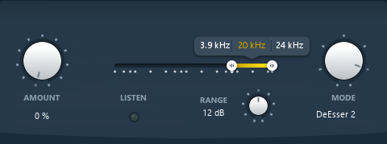

3 Module Settings
3.1 Input
3.1.1 Input Gain
The input gain control trims the level of the signal at the input of EVO Touch. The meter shows both RMS signal (VU-Meter, blue) and peak signal (peak meter, green), from -24 to +18 dB range, referenced at -18dB.
Value Range : -24.0 dB / +18.0 dB
Colors : - Blue : RMS Value - Green : Peak Value
Default Value : 0.0 dB
3.1.2 Drive
In EVO Touch a signal Drive is available direct at the input Gain for restoring and maintaining the vitality of the sound.
The drive module has been specially designed to add a soft saturation and warmth to your audio tracks.
Value Range : 0% / 100%
Default Value : 0%
3.2 Touch
Different types of material require different tools, whether it’s a vocal cut, drums, guitar, piano or something else, it requires the accurate specific treatment for the material.
The Touch module in EVO Touch is a polymorphic section offering a variety of different processors designed to adapt to the requirements of the material, with seven different processing modes including a DeEsser, Expander and a Transient and Sustain Designer.
With the adjustable signal flow in EVO Touch the Touch module can be inserted where it’s best doing its job, like having the DeEsser or Expander first in the flow, or the Transient designer after the compressor.

3.2.1 Mode
Mode parameter defines the processor used by the touch module. Seven different modes are provided.
Available modes :
- Transient Boost
- Transient Kill
- Sustain Boost
- Sustain Kill
- DeEsser 1
- DeEsser 2
- Expander
Default Value : DeEsser 2
3.2.2 Amount
The amount of signal processed by the Touch module.
Value Range : 0% / 100%
Default Value : 0%
3.2.3 Release/Range
There is a release parameter for the following modes :
- Transient Boost
- Transient Kill
- Sustain Boost
- Sustain Kill
- Expander
Value Range : 1ms / 1000ms
Default Value : 20ms
The two deesser modes offers a range parameter, to limit the maximum gain reduction.
Value Range : 0dB / 24dB
Default Value : 12dB
3.2.4 Frequency Range
The Touch module works on a defined frequency range.
Value Range :
Minimal bound : 20Hz
Maximal bound : Sampling Rate / 2
Default Value :
Inferior bound : 3.9kHz
Superior bound : up to Sampling Rate / 2
Range width : Depends on the sampling rate.
3.2.5 Listen
When enabled, you can monitor the actual signal setup with the frequency range.
Value Range : Enabled / Disabled
Default Value : Disabled
3.3 Output
3.3.1 Output Gain
The output gain control trims the level of the signal at the output of EVO Touch. The meter shows both RMS signal (VU-Meter, blue) and peak signal (peak meter, green), from -24 to +18 dB range, referenced at -18dB.
Value Range : -24.0 dB / +18.0 dB
Colors : - Blue : RMS Value - Green : Peak Value
Default Value : 0.0 dB